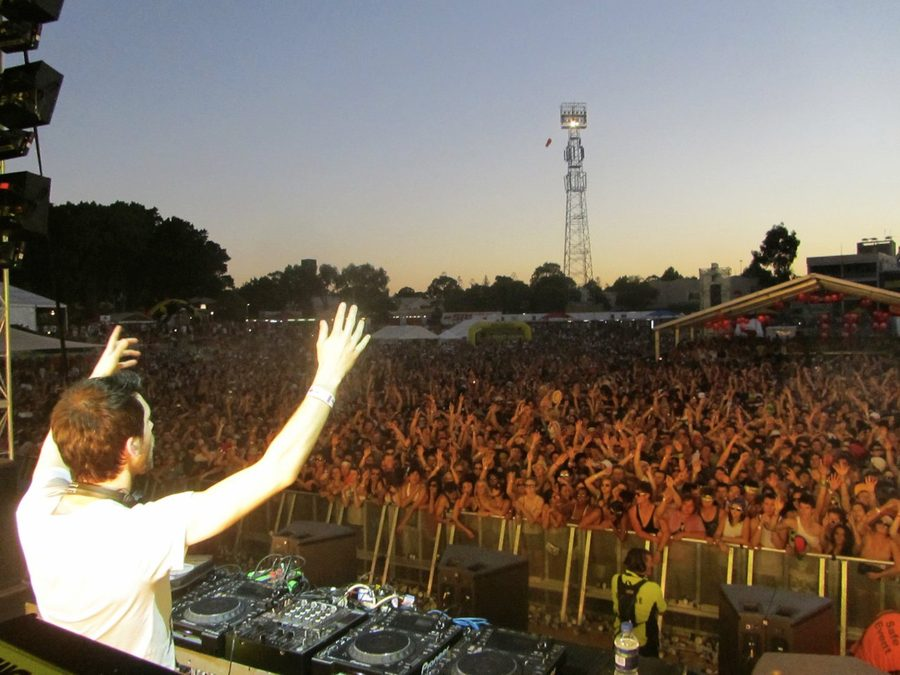

The best of Stereosonic 'week two' on inthemix



The second round of the Stereosonic Festival’s massive five-date Australian tour wrapped up over the weekend, returning for its biggest event yet in its hometown of Melbourne for an event that entertained more than 30,000 people on Saturday. However, the rest of the country wasn’t to be left out either with massive events going off in both Brisbane and Adelaide too. Were you one of the thousands and thousands who got amongst it on the weekend? Check out some of the finest moments!
Best of Stereosonic Week 2 - The People
Best of Stereosonic Week 2 - The Event
Best of Stereosonic Week 2 - The Artists
Music wise, the shows were another slice of clubbing madness. Deadmau5 proved why he’s one of the most talented electronic performers to emerge in recent memory, while Axwell again delivered a set of punchy house that couldn’t have been any tighter. Laurent Garnier, Marco Carola and Umek made sure the festival had underground cred to burn, smashing it in every state, while the Bloody Beetroots surprised nobody by inciting mass mayhem wherever they went. Predictable!
ITM was there to cover every step of the mighty Stereosonic Festival. Photos, reviews, ITM.TV episodes, you name it. Shoot over to our Festival Page for more info, or check out some of the very best content from the tour below…
> Melbourne full photo gallery
> Brisbane full photo gallery
> Sydney full photo gallery
> Perth full photo gallery
> Best Of Stereosonic Week 1 - The People
> Best Of Stereosonic Week 1 - The Event
> Best Of Stereosonic Week 1 - The Artists
> The Bloody Beetroots instore appearance
> Deadmau5 instore appearance
> Stereosonic live festival reporter - Melbourne
> Stereosonic live festival reporter - Brisbane
> Stereosonic live festival reporter - Perth
> Stereosonic live festival reporter - Sydney
> inthemix.tv at Stereosonic